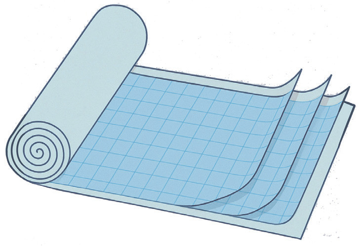
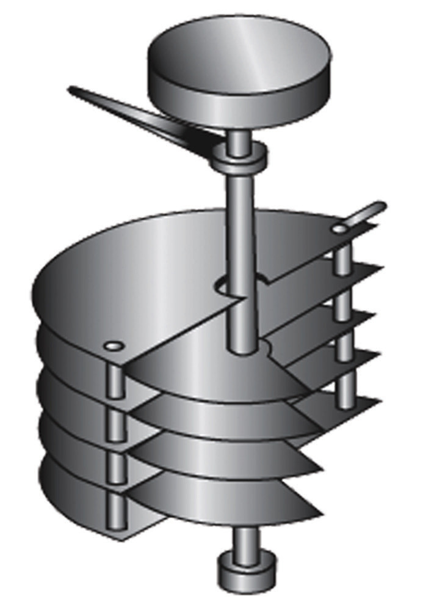
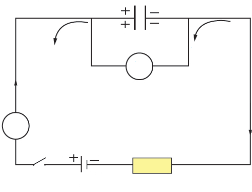

4. Air-filled capacitors
In an air-filled capacitor, air forms the insulating material (Figure 1.31). The capacitance of such devices is altered by changing the overlapping area between the plates.

An air-filled capacitor is a good example of a variable capacitor. The semicircular plates are separated by air. Variable capacitors are mainly used for tuning radio sets. One set of plates is fixed, while the other one can be rotated using a knob. Rotation changes the area of the plates. Generally, the capacitor whose capacitance can be varied is termed a variable capacitor. On the other hand, the capacitor whose capacitance cannot be changed is a fixed capacitor.
Charging a capacitor
Consider the circuit in Figure 1.32 for charging a capacitor.

An uncharged capacitor has no potential difference between its plates. It does not prevent the current from arriving at one plate or leaving the other. This is because the initial current in the circuit is determined only by the resistance of the connecting wires. Due to the presence of insulation between the capacitor plates, electrons tend to accumulate on the plate connected to the negative terminal of the charging cell. This is partly due to the attraction of the positive side of the cell or repulsion from the nearby negative charge. Current flows until the p.d across the capacitor is equal to the voltage of the charging cells. Charging of the capacitor then stops. Figure 1.33 shows a graph of charge against time for a charging capacitor.